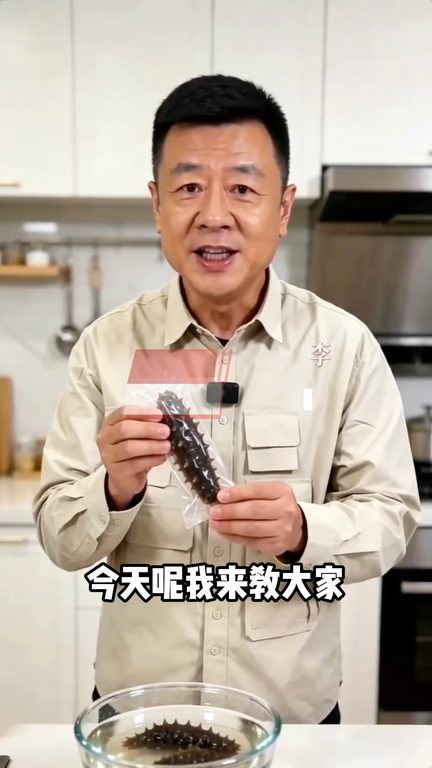
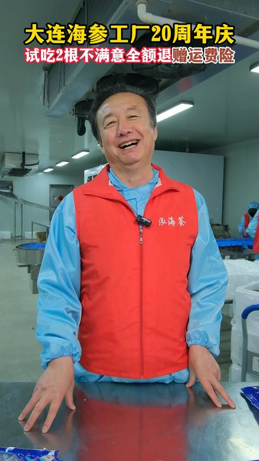
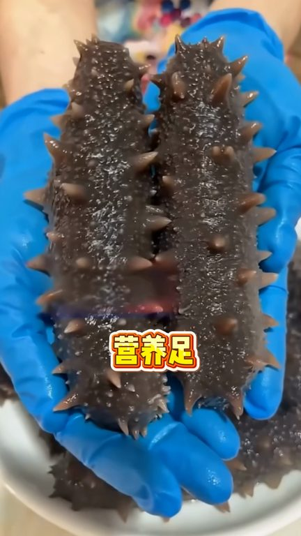
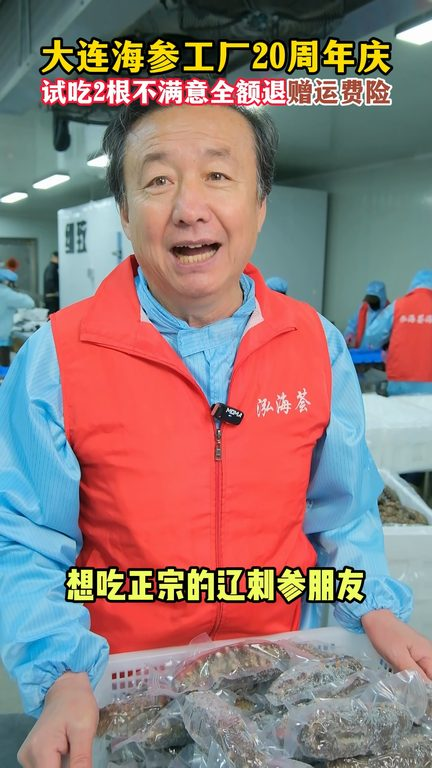

TOP 1 · 代表素材深度拆解
核心放量 稳健
视频为原始素材 HTTPS 链接；点击后加载，建议在网络环境良好时播放。
18.1万素材消耗
4.07%CTR
23.1%类目消耗占比
+0.57pp较类目均值
表现判断
该素材是类目内第 1 名，属于“核心放量”；CTR 高于类目均值。消耗体现承接规模，CTR 体现首屏与定向效率，两项应结合判断，不能仅以单指标下结论。
表达标签
口播三段式证据
开场钩子海參是好東西但是很多朋友第一步就吃錯了今天我來教大家如何正確吃海參這是我買的5斤30根紅海惠加正宗先食療刺身撕開這個獨立所先的包裝根根都是大厚肉大粗刺QQ彈彈營養豐富
中段论证那699呢那也不行那399呢399也不行那不能是199吧對了就199反正今天直播間點擊鈴鐵下單的我讓你直接享受全場199一斤價一斤二斤三斤四斤五斤足足的五斤就這樣滿滿的一大蝦都是來自正宗的大連療刺身每一根都是標準的
结尾转化而且脂肪含量非常低吃起來QQ彈彈的特別鮮豔有嚼勁每天吃一根會有印象不到的收穫而且配料表很乾淨只有海參和純淨水家裡老人小孩孕婦媽媽都可以放心去吃享受正宗的療刺身啊朋友趁著活動趕緊來直播間搶購吧
有效点
- CTR 4.07% 高于类目均值 3.50%，开场或人群指向具备点击优势
- 素材已进入类目消耗 Top，核心表达具备继续拆分测试的价值
迭代动作
- 保留当前高效钩子，复制 3 个变量版本：人物、首句和首帧分别单变量测试
- 视频时长偏长，建议剪出 30–45 秒短版，仅保留钩子、两项证据和一次 CTA
- 促销口径与资质信息保持同屏可验证，结尾只保留一个明确行动指令
合规关注

钩子建立 · 4.2s

场景/问题展开 · 31.4s

卖点证据 · 72.2s

转化收口 · 99.4s
查看完整口播摘要
海參是好東西但是很多朋友第一步就吃錯了今天我來教大家如何正確吃海參這是我買的5斤30根紅海惠加正宗先食療刺身撕開這個獨立所先的包裝根根都是大厚肉大粗刺QQ彈彈營養豐富年紀越大越能體會到吃海參的營養幫助越來越大價格我直接打到全持一折趕緊搶搶完為止899行不行不行那699呢那也不行那399呢399也不行那不能是199吧對了就199反正今天直播間點擊鈴鐵下單的我讓你直接享受全場199一斤價一斤二斤三斤四斤五斤足足的五斤就這樣滿滿的一大蝦都是來自正宗的大連療刺身每一根都是標準的四排刺越大肉厚營養足而且海參裡面還有豐富的蛋白質和十八種人體所需要的安迪酸而且脂肪含量非常低吃起來QQ彈彈的特別鮮豔有嚼勁每天吃一根會有印象不到的收穫而且配料表很乾淨只有海參和純淨水家裡老人小孩孕婦媽媽都可以放心去吃享受正宗的療刺身啊朋友趁著活動趕緊來直播間搶購吧